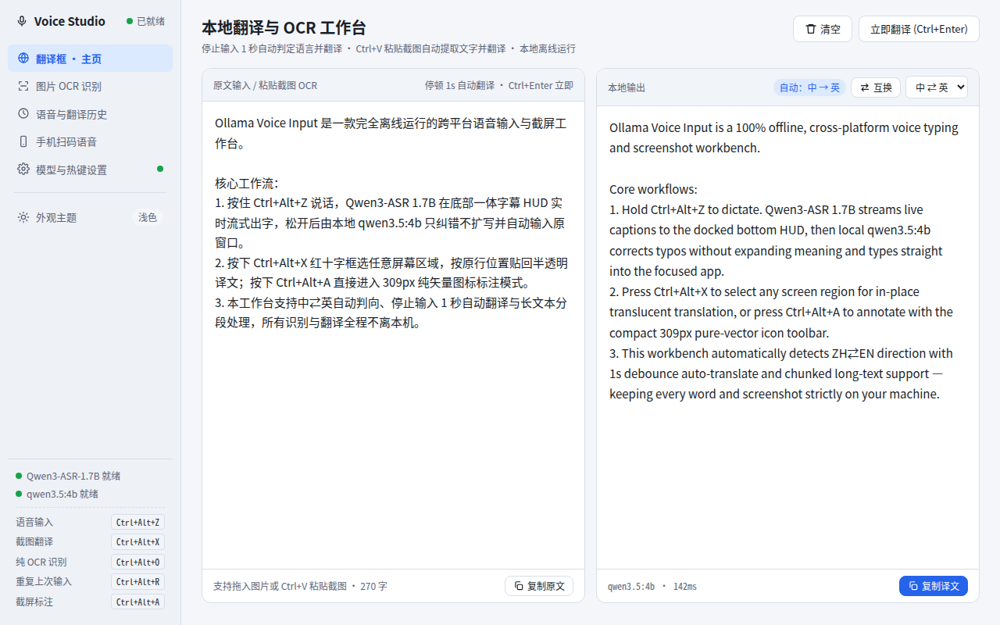

Linux
Ubuntu 24.04 amd64
ollama-voice-input_3.4.0_amd64.deb
推荐运行环境（Ubuntu 24.04 + Python 3.12），独立 venv 安装，不污染系统 Python。命令：sudo apt install ./ollama-voice-input_3.4.0_amd64.deb
集全局流式语音输入、截屏原位翻译、画笔标注、纯 OCR 识别与中英双向翻译于一体。所有识别与纠错均在本机运行，隐私不离设备。
按住快捷键说话，本地实时语音输入演示，断网也能稳定直出。
Hold the hotkey to speak — local real-time voice input demo, reliable even completely offline.
全部快捷键可在主窗口「模型与热键设置」自定义；本地看护进程自动管理服务与崩溃重启。
在任意焦点应用中按住快捷键说话，Qwen3-ASR 1.7B 实时流式识别并在屏幕底部一体字幕 HUD 呈现稳定字与流式尾字；松开后交由本地 qwen3.5:4b 只纠错不扩写，自动输入回原窗口。
全屏红色十字定位框选任意屏幕区域，按行识别原文位置与格式，经本地模型整段翻译后，以采样底色半透明译文贴片精准排回原位；框下迷你菜单一键复制译文或原文，Esc 随时退出。
框选冻结画面后直接进行矩形、箭头、自由画笔、文字与马赛克 5 种标注，提供 6 色色板与 3 档粗细；309px 精简纯矢量图标主条与等高二级样式条零抖动切换，按 Enter 自动复制 PNG 到剪贴板并关闭。
Ctrl+Alt+O 复用红十字框选与原位浮窗，跳过 LLM 秒级提取屏幕文字并支持一键复制；Ctrl+Alt+R 将上一次语音识别结果立即重发到当前光标所在窗口。
主窗口提供中⇄英自动判向、1 秒输入防抖、⇄ 手动锁定方向与长文本分段翻译；支持局域网手机扫码打开本地 HTTPS 语音页录入文字；首次运行可在设置页一键装齐 Ollama、qwen3.5:4b 与 Qwen3-ASR 运行环境（自动匹配 CUDA / Apple MPS / CPU）。
工作台截图随当前浅色/深色主题自动切换，标注图展示 309px 纯矢量双条与实时画笔/马赛克效果。

安装包由 GitHub Actions 自动构建并发布于 GitHub Releases，安装后在设置页一键装齐全部本地模型。
推荐运行环境（Ubuntu 24.04 + Python 3.12），独立 venv 安装，不污染系统 Python。命令：sudo apt install ./ollama-voice-input_3.4.0_amd64.deb
Windows x64 Inno Setup 安装器（未签名，尚未经 Windows 真机验收）。如遇 SmartScreen 提示，点击「更多信息 → 仍要运行」。
Apple Silicon (arm64) 镜像（未公证，尚未经 macOS 真机验收）。拖入 Applications 后需解除隔离属性并授予麦克风、辅助功能与屏幕录制权限。
xattr -cr "/Applications/Ollama Voice Input.app"（或在系统设置 → 隐私与安全性点击「仍要打开」），随后授予麦克风、辅助功能与屏幕录制权限。
清晰边界：个人、研究、企业内部自用及开源分发完全免费；仅闭源二次封装或闭源商用需获取商业授权。